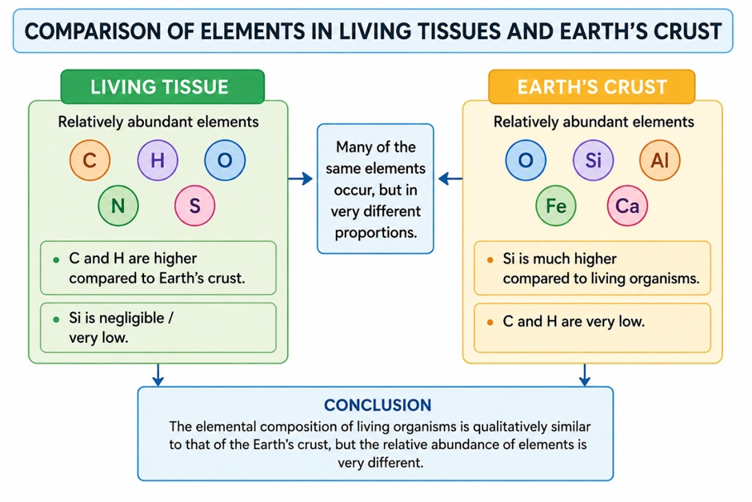
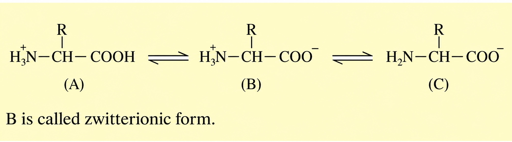
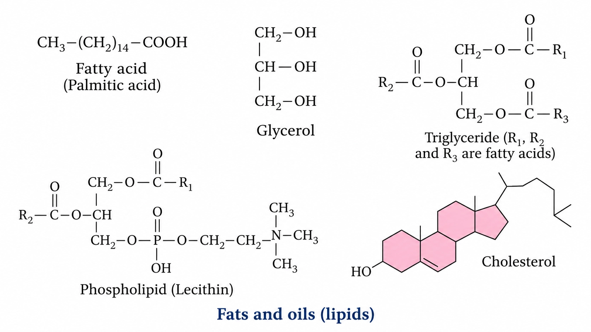
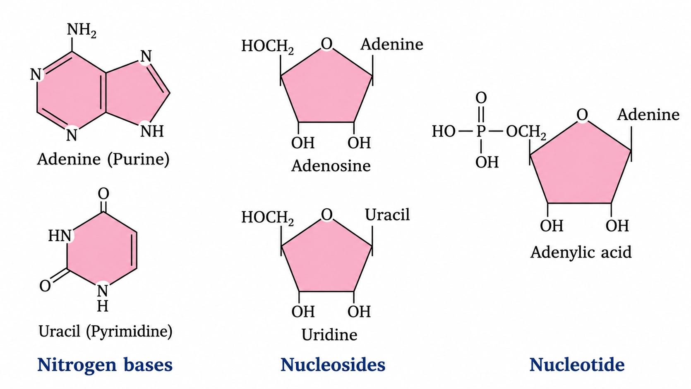
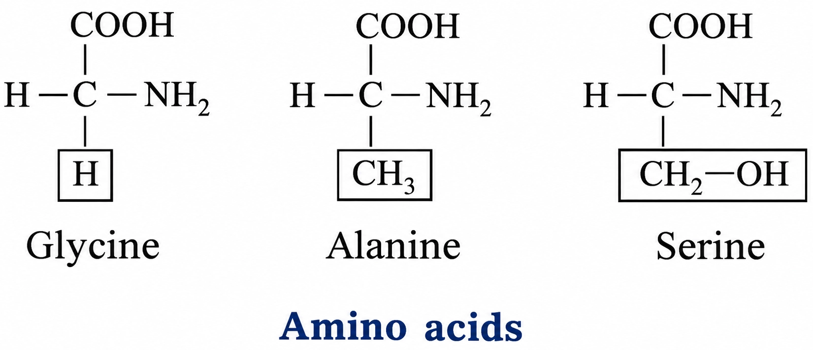
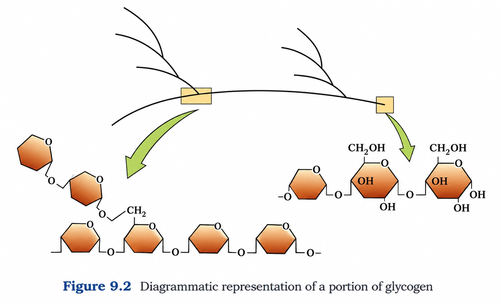
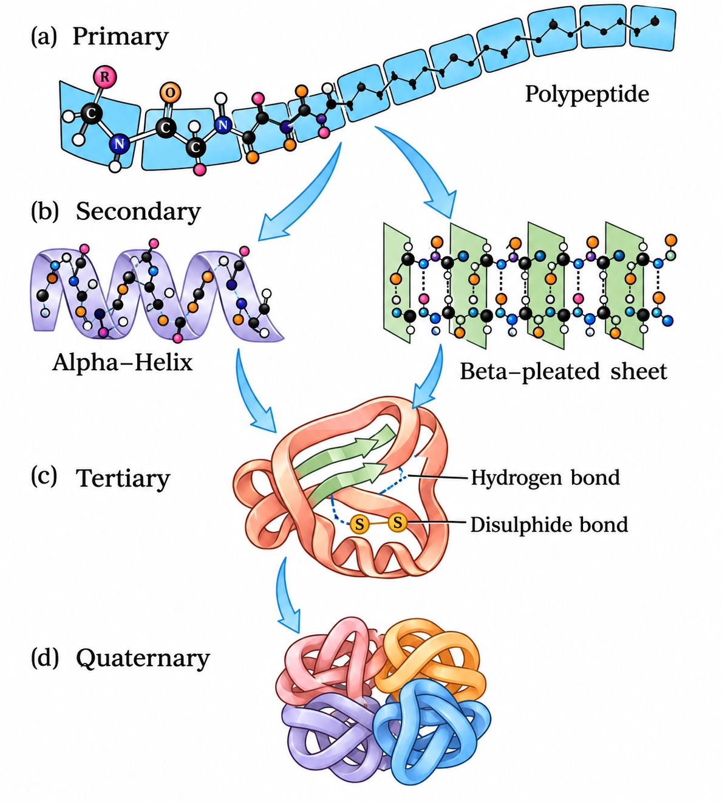

Biology
Biomolecules
Living tissues and earth's crust share elements; the key difference is relative abundance (C and H enriched in life).
ELEMENTAL COMPOSITION COMPARISON
📖Definition & Introduction
- Elemental composition comparison studies which elements occur in living tissues vs non-living matter and their % by mass.
- Elemental analysis of plant/animal/microbial tissues lists common elements like C, H, O, N, S, Na, Ca, Mg, etc.
- Elemental analysis of earth's crust gives a similar list of elements (no "life-only" element).
- The major difference is quantitative: living matter has much higher relative abundance of C and H than the crust.
- Example evidence: human body is rich in O (65%), C (18.5%), H (9.5%), while crust is rich in O (46.6%) and Si (27.7%).
🖼️Diagram

🎯Key Concepts
- 🔬Elemental analysis reports elements and their % by mass in a sample.
- 🌍Earth's crust is dominated by O and Si (also Al and Fe); carbon is very low (~0.03%).
- 🧬Living tissues are dominated by O, C, H, N; carbon and hydrogen are much higher than in crust.
- ⚖️Exam line: No unique element in living matter; difference is mainly in proportions.
🔎WHAT THE COMPARISON SHOWS
- If lists overlap, conclude: no unique element is exclusive to living matter.
- If percentages differ greatly, conclude: difference is mainly relative abundance.
- C and H enrichment supports why living matter is dominated by carbon compounds (biomolecules).
- Crust enrichment of Si supports why rocks/minerals are mainly silicates.
⚙️HIGH-YIELD NUMBERS
- Human body: O 65%, C 18.5%, H 9.5%, N 3.3%, S 0.3%.
- Earth's crust (major): O 46.6%, Si 27.7%, Al and Fe are also major; Na 2.8%, Ca 3.6%, Mg 2.1%.
- Carbon is tiny in crust (~0.03%) but major in the body (18.5%).
- Hydrogen is tiny in crust (0.14%) but major in the body (9.5%).
- Silicon is major in crust (27.7%) but negligible in the body.
⚖️LIVING TISSUES vs EARTH'S CRUST (ELEMENTS ARE SAME, % DIFFERS)
| Basis | Living tissues (e.g., human body) | Earth's crust |
|---|---|---|
| Unique elements? | No; elements also occur in crust | No; same periodic table elements |
| Main dominant elements | O, C, H, N | O, Si (also Al, Fe, Ca, Na, Mg) |
| Carbon (% by mass) | 18.5% | 0.03% |
| Hydrogen (% by mass) | 9.5% | 0.14% |
| Oxygen (% by mass) | 65.0% | 46.6% |
| Silicon (% by mass) | Negligible | 27.7% |
💡Memory Technique
“Mnemonic: CH-Life vs Si-Rock”
TCA grinding gives an initial fractionation into acid-soluble pool and acid-insoluble fraction; for any one compound, proceed further by isolation, purification and analysis
CHEMICAL COMPOSITION ANALYSIS (ACID EXTRACTION)
📖Definition & Introduction
- Chemical composition analysis of tissues begins by extracting biomolecules and separating them into two fractions.
- Tissue is ground with trichloroacetic acid (TCA), Cl3CCOOH, using mortar–pestle to form a thick slurry.
- Slurry is strained through cheesecloth/cotton to obtain filtrate and retentate.
- Filtrate is the acid-soluble pool: mainly small, water-soluble molecules; it can also contain inorganic ions/compounds.
- Retentate is the acid-insoluble fraction: mainly cellular macromolecules and membrane-associated material.
🖼️Diagram
TCA (Cl3CCOOH) grinding → straining → filtrate (acid-soluble pool) + retentate (acid-insoluble fraction).
🎯Key Concepts
- 🧫TCA extraction is an initial fractionation step, not final identification of each compound.
- 🧵Acid-insoluble fraction contains proteins, nucleic acids, polysaccharides; lipids appear due to membranes/vesicles.
- 💧Acid-soluble pool approximately reflects cytoplasmic micromolecules (low molecular mass, typically < 1000 Da).
- 🧂Acid-soluble pool can include phosphate and sulphate; it is not only organic.
- 🔁Isolation + purification means repeated separation until a single compound is obtained.
- 🔬Analytical techniques then give molecular formula and probable structure, not just the name.
🔎WORKING: ACID EXTRACTION (TCA GRINDING)
- Cold TCA denatures/precipitates many macromolecules, helping keep them in the insoluble fraction.
- Grinding breaks cells and releases contents; straining physically separates soluble vs insoluble material.
- Acid-soluble pool: small molecules (e.g., amino acids, sugars, bases, nucleotides) plus inorganic ions/compounds.
- Acid-insoluble fraction: proteins, nucleic acids, polysaccharides; lipids appear due to membranes forming vesicles.
- Together, the two fractions represent the entire chemical composition of the tissue.
⚙️FROM FRACTIONS TO IDENTIFICATION: ISOLATION → PURIFICATION → ANALYSIS
- Step 1: Extract the mixture from tissue (here, by TCA extraction and fractionation).
- Step 2: Separate repeatedly until a single compound is obtained (isolation + purification).
- Step 3: Use analytical techniques to determine molecular formula and probable structure.
- Exam line: naming a compound is incomplete without formula/structure evidence from analysis.
⚖️Acid-soluble pool vs Acid-insoluble fraction (after TCA extraction)
| Basis | Acid-soluble pool (filtrate) | Acid-insoluble fraction (retentate) |
|---|---|---|
| How obtained | Liquid that passes through cheesecloth/cotton when TCA-ground slurry is strained | Material retained on cheesecloth/cotton during straining of TCA-ground slurry |
| Major contents | Mainly micromolecules (many small organic compounds) + inorganic ions/compounds | Proteins, nucleic acids, polysaccharides, and membrane-associated lipids |
| Solubility idea | Soluble in acidic aqueous medium | Insoluble/particulate/precipitated material |
| Inorganic presence | Can contain phosphate, sulphate, Na+, K+, etc. | Predominantly organic cellular material; may physically trap some salts |
| Common exam trap | Not "only organic"; inorganic ions/compounds may be present | Lipids appear due to membranes/vesicles, not because each lipid is a true macromolecule |
💡Memory Technique
“FR mnemonic: Filtrate Flows; Retentate Remains”
Wet weight → dry weight → complete burning: ash reveals inorganic residue in tissues
INORGANIC CONSTITUENTS AND ASH
📖Definition & Introduction
- Ash is the inorganic residue left after complete burning of dried biological tissue.
- Wet weight = mass of fresh tissue; includes water + organic + inorganic matter.
- Dry weight = mass after drying; water is removed, but organic + inorganic solids remain.
- On burning completely, carbon compounds oxidise mainly to CO2 and H2O vapour and escape.
- Therefore, ash mainly represents inorganic ions/compounds originally present in the tissue.
- Inorganic ions/compounds can occur in the acid-soluble pool as well (not only organic molecules).
🖼️Diagram
Mass-based destructive test: drying removes water; complete burning removes organics; ash indicates inorganic content.
🎯Key Concepts
- ⚖️Wet vs dry weight separates water content; ash step separates inorganic from organic matter.
- 🔥Complete burning removes organics as gases; residue left behind is mineral (inorganic) content.
- 🧂Common cellular ions: Na+, K+, Ca2+, Mg2+, PO43−, SO42−.
- 🧫Inorganic ions may be free in cytoplasm or as salts like NaCl, CaCO3.
- 🧠Exam idea: living and non-living share elements; difference is largely in proportions, not presence/absence.
🔎WHAT EXACTLY DOES EACH STEP TELL YOU?
- Wet weight: total tissue mass (water + organic + inorganic).
- Dry weight: excludes water; useful to compare solids between samples.
- Complete burning: converts most organics to volatile oxides that escape.
- Ash: reflects mineral (inorganic) load; varies with tissue type and diet/environment.
- Ash is evidence of inorganic constituents inside living cells and tissues.
⚙️REPRESENTATIVE INORGANIC CONSTITUENTS IN CELLS
- Major cations: Na+, K+, Ca2+, Mg2+.
- Major anions: phosphate PO43−, sulphate SO42− (also as dissolved ions).
- Examples of inorganic compounds/salts: NaCl, CaCO3, phosphates, sulphates.
- Water is inorganic and the most abundant cellular constituent, but it leaves during drying.
⚖️WET WEIGHT vs DRY WEIGHT vs ASH
| Basis | Wet weight | Dry weight | Ash |
|---|---|---|---|
| How obtained | Weigh fresh tissue | Dry tissue, then weigh | Burn dried tissue completely |
| What is removed | Nothing removed | Water removed | Organics removed as gases |
| Main content left | Water + organics + inorganics | Organics + inorganics | Mostly inorganic salts/ions |
| Exam use | Baseline tissue mass | Compare solids across samples | Detect/estimate inorganic matter |
💡Memory Technique
“WDA: "Water Drops Away, then Ash"”
Functional biological grouping: amino acids, sugars, lipids, and nucleotides/bases as key building blocks
BIOLOGICAL BIOMOLECULE CLASSES
📖Definition & Introduction
- Biological classification groups biomolecules by biological role/building-block function, not only by chemical functional groups.
- Major small biomolecule classes: amino acids, sugars (carbohydrates), lipids, nitrogen bases/nucleotides.
- These small molecules commonly occur in the acid-soluble pool (micromolecules, usually <1000 Da).
- Building-block idea: amino acids → proteins; nucleotides → nucleic acids; sugars → polysaccharides; fatty acids/glycerol → many lipids.
- Biologically important note: lipids are water-insoluble and often appear with the acid-insoluble fraction due to membranes/vesicles.
🖼️Diagram
Biological grouping highlights how small biomolecules serve as building blocks for major cellular macromolecules.
🎯Key Concepts
- 🧱Living systems are organised as monomers → polymers: building blocks assemble into macromolecules.
- 🧪Amino acids have both –NH2 and –COOH on the same α-carbon; 20 are proteinaceous.
- 🍬Sugars include glucose and ribose; monosaccharides polymerise to polysaccharides (starch, glycogen, cellulose).
- 🧈Lipids are generally water-insoluble; fatty acids may be saturated or unsaturated; membranes contain phospholipids.
- 🔤Nitrogen bases (A,G,C,T,U) + sugar = nucleoside; + phosphate = nucleotide; DNA/RNA are polynucleotides.
- ⚠️Exam distinction: "-side" = base + sugar; "-tide" = base + sugar + phosphate.
🔎FOUR CORE CLASSES: WHAT THEY BUILD
- Amino acids → join by peptide bonds → proteins (polypeptides; heteropolymers of 20 amino acids).
- Sugars (carbohydrates) → glycosidic linkage → polysaccharides (starch, glycogen, cellulose).
- Fatty acids + glycerol → ester linkage → glycerides (mono-, di-, tri-glycerides); energy storage.
- Phospholipids (with phosphate) are major membrane components; example: lecithin.
- Nitrogen bases + sugar + phosphate = nucleotide → polymerise to DNA/RNA.
⚙️EXAM-HIGH YIELD MICRO-DEFINITIONS
- Amino acid: –NH2 and –COOH on same α-carbon; R-group determines identity.
- Amino acids are ionizable; common ionic form in water is zwitterion (both + and − charges).
- Fatty acid: long hydrocarbon chain + terminal –COOH; saturated has no C=C, unsaturated has ≥1 C=C.
- Nucleoside = base + sugar; nucleotide = nucleoside + phosphate (esterified to sugar).
- Purines: A, G; Pyrimidines: C, T, U.
⚖️Quick comparison of biomolecule classes (biological view)
| Basis | Amino acids | Sugars (carbohydrates) | Lipids |
|---|---|---|---|
| Typical role | Protein building blocks | Energy + structural building blocks | Membranes + energy store |
| Key subunit feature | α-C with –NH2, –COOH, H, R | Polyhydroxy aldehyde/ketone; e.g., glucose, ribose | Hydrophobic chains; fatty acid + glycerol common |
| Polymer formed | Polypeptides/proteins | Polysaccharides | No single universal polymer; assemble into membranes/droplets |
| Water solubility (general) | Generally water-soluble as zwitterions (varies with R group) | Mostly water-soluble as monosaccharides | Generally water-insoluble (hydrophobic) |
💡Memory Technique
“Mnemonic: ASLiN for the 4 classes”
α-amino acid structure, key classes, and pH-dependent zwitterions
AMINO ACIDS BASICS
📖Definition & Introduction
- Amino acids are organic compounds having –NH2 and –COOH on the same α-carbon.
- General formula: H2N–CH(R)–COOH; α-carbon is a substituted methane carbon.
- α-carbon has four substituents: –NH2, –COOH, H, and variable R group.
- Only 20 proteinaceous amino acids are commonly found as building blocks of proteins.
- Because –NH2 and –COOH are ionizable, amino acids change ionic form with pH.
- A zwitterion is the internal salt form carrying both + and − charges simultaneously.
🖼️Diagram

🎯Key Concepts
- 🧩The R group determines identity and many properties (polarity, charge tendency, aromaticity).
- ⚡At physiological pH, most amino acids exist mainly as NH3+–CH(R)–COO− (zwitterion).
- 🧪Classification can be based on relative numbers of amino and carboxyl groups: acidic/basic/neutral.
- 📌Aromatic protein amino acids: phenylalanine, tyrosine, tryptophan.
- 🔁With changing pH: cationic form (low pH) ⇄ zwitterion ⇄ anionic form (high pH).
🔎PROTEINACEOUS 20: WHAT “ONLY 20” MEANS
- Many amino acids exist in nature, but proteins are built mainly from 20 standard amino acids.
- Examples from text: glycine (R = H), alanine (R = –CH3), serine (R = –CH2OH).
- These 20 are encoded by the genetic code in organisms; hence called protein amino acids.
⚙️pH-DEPENDENT IONIC FORMS (ZWITTERION FOCUS)
- In acidic medium, amino group is protonated: dominant form is more cationic (overall +).
- Near neutral pH, internal salt dominates: NH3+ and COO− present together (zwitterion).
- In basic medium, carboxyl group is deprotonated and amino group can lose H+: more anionic (overall −).
- Reason for change: both –NH2/–NH3+ and –COOH/–COO− are ionizable.
⚖️CLASSIFICATION OF AMINO ACIDS (EXAM-FRIENDLY)
| Basis | Class | Key idea + examples |
|---|---|---|
| Extra –COOH / net acidic tendency | Acidic | More carboxyl groups; example: glutamic acid |
| Extra –NH2 / net basic tendency | Basic | More amino groups; example: lysine |
| No extra ionizable group in side chain (in this basic scheme) | Neutral | Neither acidic nor basic overall; example: valine |
| Aromatic ring in side chain | Aromatic | phenylalanine, tyrosine, tryptophan |
💡Memory Technique
“Mnemonic: "Phe-Tyr-Trp = 3 Aro"”
Generally water-insoluble biomolecules: fatty acids + glycerol form glycerides (esters); phospholipids are major membrane lipids
LIPIDS AND FATTY ACIDS
📖Definition & Introduction
- Lipids are generally water-insoluble biomolecules, important in energy storage and membranes.
- Fatty acids are simple lipids: a –COOH (carboxyl) group attached to a hydrocarbon R chain.
- Saturated fatty acids have no C=C; unsaturated have one or more C=C bonds.
- Glycerol is trihydroxy propane; fatty acids get esterified with glycerol to form glycerides.
- Phospholipids are lipids that contain phosphorus and a phosphorylated organic compound; they are major cell membrane components.
🖼️Diagram

🎯Key Concepts
- 💧Lipids appear insoluble because they aggregate into membrane fragments/vesicles rather than dissolving in water.
- 🧪Fatty acid = polar head (–COOH) + non-polar tail (hydrocarbon chain).
- 🔗Unsaturation (C=C) introduces a bend; packing decreases → typically lower melting point.
- 🧴Glycerides: mono (1 fatty acid), di (2 fatty acids), tri (3 fatty acids) esterified to glycerol.
- 🧫Phospholipids (e.g., lecithin) are amphipathic and form membrane bilayers.
🔎FATTY ACIDS: STRUCTURE & SATURATION
- General structure: R–COOH (R = hydrocarbon chain of varying length).
- R chain length varies (as per NCERT description, R can range from 1 to 19 carbons).
- Example: palmitic acid has 16 carbons total (including the –COOH carbon).
- Example: arachidonic acid has 20 carbons total (including the –COOH carbon).
- Saturated: no double bond in the chain; packs tightly → usually higher melting point.
⚙️GLYCEROL, FATS/OILS & PHOSPHOLIPIDS
- Glycerol = trihydroxy propane; fatty acids are esterified with glycerol.
- Glycerides: mono/di/tri depending on number of fatty acids esterified.
- Fats vs oils (exam basis): melting point; oils have lower MP and can remain liquid even in winters; fats have higher MP and are more solid under similar conditions.
- Phospholipids: contain phosphorus and a phosphorylated organic compound; found in the cell membrane.
- Example phospholipid: lecithin; some tissues (especially neural tissues) contain more complex lipids.
⚖️FATS vs OILS (basis: melting point)
| Basis | Fats | Oils |
|---|---|---|
| Melting point | Comparatively higher | Lower |
| Physical state (similar conditions) | More solid/semi-solid | More liquid |
| Reason (packing trend) | Often richer in saturated fatty acids | Often richer in unsaturated fatty acids |
| Exam caution | Do not define by animal source | Do not define by plant source |
💡Memory Technique
“COOH at the core; glycerol has 3 OH; 3 fatty acids → triglyceride”
Base + sugar → nucleoside; + phosphate → nucleotide; DNA/RNA are polynucleotides
NUCLEOTIDES AND NUCLEIC ACIDS
📖Definition & Introduction
- Nucleic acids (DNA, RNA) are polynucleotides—polymers made only of nucleotides.
- Nitrogenous bases are heterocyclic ring compounds: A, G, C, T, U.
- Nucleoside = nitrogen base + pentose sugar (no phosphate).
- Nucleotide = nucleoside + phosphate esterified to the sugar.
- In cellular organisms, DNA is the primary genetic material; RNA mainly functions in gene expression and regulation (RNA is genetic material in some viruses).
- Sugar decides type: ribose (RNA) vs 2′-deoxyribose (DNA).
🖼️Diagram

🎯Key Concepts
- 🧩Building blocks: bases (A,G,C,T,U) + pentose sugar + phosphate = nucleotide
- 🟣Purines (double ring): A, G; Pyrimidines (single ring): C, T, U
- 🍬RNA contains ribose; DNA contains 2′-deoxyribose
- 🔗Nucleic acids are polymers; monomer = nucleotide (not nucleoside)
- 🏷️Examples: adenosine (nucleoside), adenylic acid (nucleotide)
- 🧠Exam cue: “-side” lacks phosphate; “-tide” includes phosphate
🔎NITROGENOUS BASES: PURINE vs PYRIMIDINE
- Purines have two fused rings: adenine (A), guanine (G).
- Pyrimidines have one ring: cytosine (C), thymine (T), uracil (U).
- DNA uses T; RNA uses U (both are pyrimidines).
- All are heterocyclic ring bases found in living tissues.
⚙️DNA vs RNA: WHAT CHANGES?
- Sugar: DNA has 2′-deoxyribose; RNA has ribose.
- Base set: DNA typically uses A, G, C, T; RNA uses A, G, C, U.
- Both are polynucleotides built from nucleotides; phosphate is part of each monomer.
- Nucleoside names end with “-osine” (e.g., adenosine, uridine).
⚖️DNA vs RNA (HIGH-YIELD DIFFERENCES)
| Basis | DNA | RNA |
|---|---|---|
| Full name | Deoxyribonucleic acid | Ribonucleic acid |
| Sugar in nucleotide | 2′-deoxyribose | Ribose |
| Characteristic base | Thymine (T) | Uracil (U) |
| Common base set | A, G, C, T | A, G, C, U |
| Main role (high-yield) | Primary genetic material in cellular organisms | Functions in gene expression (mRNA, tRNA, rRNA); genetic material in some viruses |
💡Memory Technique
“PURe As Gold + side/tide hook”
Core universal biomolecules vs specialised products (plants/fungi/microbes) with huge ecological & human value
PRIMARY AND SECONDARY METABOLITES
📖Definition & Introduction
- Metabolites are organic compounds found in living organisms that chemists can isolate and whose structures can be determined.
- Primary metabolites are common, core biomolecule categories with defined roles in normal physiology.
- They are widely present across organisms; many are abundant in animal tissues.
- Secondary metabolites are additional compounds, found especially in plants, fungi and microbes.
- We do not understand the role/function of all secondary metabolites in their host organisms, yet they have major utility.
- Secondary metabolites can confer ecological advantages like defence, attraction and competition.
🎯Key Concepts
- ⚙️Primary metabolites: essential for growth, maintenance and reproduction (core metabolism).
- 🌿Secondary metabolites: species-/tissue-specific; often induced by stress or developmental stage.
- 🧪Secondary ≠ unimportant; many are drugs, pigments, toxins, scents and industrial polymers.
- 🧩Primary groups include sugars, amino acids, lipids, nucleotides/bases; secondary has diverse classes.
- 🛡️Ecological roles: anti-herbivory (toxins), anti-microbial (antibiotics), pollinator attraction (pigments).
🔎SECONDARY METABOLITES: MAJOR CLASSES & EXAMPLES
- Pigments: carotenoids, anthocyanins (colour, attraction, photoprotection).
- Alkaloids: morphine, codeine (often bitter; strong physiological effects in humans).
- Terpenoids: monoterpenes, diterpenes (volatile scents, resins, defence).
- Essential oils: lemon grass oil (fragrance; antimicrobial roles in plants).
- Toxins: abrin, ricin (potent defence molecules; highly toxic).
⚙️WHY THIS CLASSIFICATION MATTERS IN EXAMS
- Primary metabolites are tied to growth and basic metabolism; secondary are specialised and variable.
- Secondary metabolites are especially common in plants/fungi/microbes; they are not defined as universal in animals.
- Many secondary metabolites function in defence, signalling and competition even if host-specific details are unknown.
- Human use: medicines, flavours, scents, dyes/pigments, toxins and industrial polymers.
- Phrase to write: secondary ≠ unimportant; it means not part of the universal core set.
⚖️PRIMARY vs SECONDARY METABOLITES (High-yield comparison)
| Basis | Primary metabolites | Secondary metabolites |
|---|---|---|
| Occurrence | Common in most cells; many occur abundantly in animal tissues | Found especially in plant, fungal and microbial cells |
| Role in organism | Identifiable functions in normal physiological processes | Functions of many in the host are not fully known; often ecological roles |
| Essentiality | Core for growth, maintenance and reproduction | Not part of the universal core set; often dispensable for basic survival under lab conditions |
| Chemical diversity | Relatively conserved classes (sugars, amino acids, lipids, nucleotides/bases) | Highly diverse (pigments, alkaloids, terpenoids, essential oils, toxins, drugs, polymeric substances) |
| Examples | Glucose, amino acids, fatty acids, nucleotides | Morphine, codeine, carotenoids, anthocyanins, abrin, ricin, vinblastin, curcumin, rubber, gums, cellulose |
| Human value / applications | Nutrition and energy; building blocks of macromolecules | Drugs, spices/flavours, scents, dyes/pigments, toxins; industrial products like polymeric substances (rubber, gums, cellulose) |
💡Memory Technique
“Mnemonic: PRImary = PRIority for life; SECondary = SECondary uses (scent, shade, shield)”
Acid extraction separates micromolecules (acid-soluble) from biomacromolecules (acid-insoluble); lipids are a special case
BIOMACROMOLECULES AND FRACTIONS
📖Definition & Introduction
- Acid extraction of tissue gives an acid-soluble pool (filtrate) and an acid-insoluble fraction (retentate/pellet).
- Acid-soluble pool contains mostly micromolecules with MW < 1000 Da (about 18–800 Da).
- Acid-insoluble fraction contains major cellular macromolecules: proteins, nucleic acids, polysaccharides and lipids.
- True biomacromolecules typically have MW ≥ 10,000 Da (proteins, nucleic acids, polysaccharides).
- Lipids are usually < 800 Da individually, yet appear acid-insoluble because they exist as membrane/vesicle aggregates.
🖼️Diagram
Acid extraction separates small soluble molecules from insoluble cellular polymers and membrane aggregates.
🎯Key Concepts
- 🧫Grinding in trichloroacetic acid (TCA) + filtration → filtrate and retentate.
- 🧩Micromolecules: amino acids, sugars, bases, nucleosides/nucleotides; also some inorganic ions (PO43−, SO42−).
- 🧬Acid-insoluble is enriched in polymers: proteins, DNA/RNA, polysaccharides.
- 🫧Lipids become acid-insoluble because membrane fragments form vesicles (not water soluble).
- 💧Cell abundance snapshot: Water 70–90%; proteins 10–15%; nucleic acids 5–7%.
🔎WHAT IS IN EACH FRACTION?
- Acid-soluble pool (18–800 Da): amino acids, simple sugars, nitrogen bases, nucleosides, nucleotides.
- Also contains inorganic constituents like ions and salts (e.g., phosphate, sulphate).
- Acid-insoluble fraction: proteins, nucleic acids, polysaccharides and lipids (major structural/functional pool).
- Acid-soluble pool roughly reflects cytoplasmic composition; acid-insoluble includes cytoplasm + organelles.
⚙️WHY DO LIPIDS BEHAVE LIKE 'MACROMOLECULES' HERE?
- Individually, lipids are small (commonly ≤ 800 Da), so they are not true macromolecules by MW.
- In cells, lipids are arranged in membranes; grinding breaks membranes into fragments.
- Fragments reseal into vesicles (hydrophobic aggregates) that are acid/water insoluble.
- Hence lipids co-sediment with the acid-insoluble fraction due to aggregation, not high MW.
⚖️ACID-SOLUBLE POOL vs ACID-INSOLUBLE FRACTION
| Basis | Acid-soluble pool (filtrate) | Acid-insoluble fraction (retentate/pellet) |
|---|---|---|
| Typical MW range | ≈ 18–800 Da; mostly < 1000 Da | Mostly ≥ 10,000 Da (proteins, nucleic acids, polysaccharides) |
| Main type | Micromolecules | Macromolecules/biomacromolecules + membrane aggregates |
| Major organic classes | Amino acids, sugars, bases, nucleosides, nucleotides | Proteins, nucleic acids, polysaccharides, lipids |
| Solubility idea | Dissolved in acid-water phase | Insoluble; retained/precipitated |
| Special note | May include inorganic ions too | Lipids appear here due to membranes → vesicles |
💡Memory Technique
“SIP vs PNNL”
Polypeptides (heteropolymers) of 20 amino acids joined by peptide bonds; key roles + high-yield examples
PROTEINS AND FUNCTIONS
📖Definition & Introduction
- Proteins are polypeptides: linear chains of amino acids linked by peptide bonds.
- Each amino acid has an α-carbon with –NH2, –COOH, H, and variable R group.
- Proteins are heteropolymers because they use more than one kind of monomer (20 proteinaceous amino acids).
- Essential amino acids cannot be synthesised by the body; must come from diet.
- Non-essential amino acids can be synthesised by the body from metabolic intermediates.
🖼️Diagram

🎯Key Concepts
- 🔗Peptide bond: covalent link between –COOH of one amino acid and –NH2 of next (dehydration).
- 🧩Sequence matters: primary structure = exact amino-acid order; it dictates folding and function.
- 🧱Homopolymer vs heteropolymer: one monomer repeated vs many monomer types in one chain.
- 🥗Dietary protein is mainly needed to supply essential amino acids; total protein alone is not enough.
- 🏷️Most abundant: Collagen (animal world); RuBisCO (biosphere).
- 🚪Membrane transport proteins (e.g., GLUT-4) enable selective entry of molecules like glucose.
🔎PEPTIDE BOND + POLYPEPTIDE BASICS
- Peptide bond forms by condensation: water is removed during linkage.
- Backbone repeats: –N–Cα–C–; R groups project outward and drive properties.
- Polypeptide has direction: N-terminus (free –NH2) to C-terminus (free –COOH).
- Protein = one or more polypeptide chain(s); many proteins require correct 3D folding for activity.
⚙️FUNCTIONS: HIGH-YIELD CATEGORIES + EXAMPLES
- Structural: collagen in intercellular ground substance; major strength protein in animals.
- Enzymes: trypsin catalyses protein digestion (protease).
- Hormones: insulin regulates blood glucose; peptide/protein hormone.
- Defence: antibodies (immunoglobulins) bind antigens and neutralise infectious agents.
- Receptors: protein receptors mediate smell, taste, and hormone responses.
⚖️HOMOPOLYMER vs HETEROPOLYMER (EXAM FAVOURITE)
| Basis | Homopolymer | Heteropolymer |
|---|---|---|
| Monomer types | Only one monomer type repeated | More than one monomer type present |
| Example | Cellulose (glucose only) | Proteins (20 amino acids) |
| Information content | Low sequence variety | High sequence variety → many functions |
| Typical question trap | Thinking all polymers are "homo" by default | Proteins are heteropolymers because they use many amino acid types (20 proteinaceous amino acids) |
💡Memory Technique
“C R I A G: remember key protein examples”
Sugar polymers • Homopolysaccharides • Ends of a chain • Iodine test • Chitin
POLYSACCHARIDES: KEY CONCEPTS
📖Definition & Introduction
- Polysaccharides are macromolecules made of many monosaccharides linked into long chains.
- They are part of the acid-insoluble fraction (biomacromolecules) of cells/tissues.
- Chains may be unbranched (e.g., cellulose) or branched (e.g., glycogen).
- Many polysaccharides discussed here are homopolymers: only one type of sugar repeats.
- A polysaccharide chain has polarity: one reducing end and one non-reducing end.
🖼️Diagram

🎯Key Concepts
- 🧩Monosaccharides are the building blocks; polymerization creates long sugar chains.
- 🧱Cellulose: glucose homopolymer; major plant cell wall component (paper, cotton).
- 🌾Starch: plant glucose polymer; amylose forms helical regions that trap iodine.
- 🐄Glycogen: animal glucose polymer; highly branched with many non-reducing ends.
- 🌼Inulin: fructose homopolymer (a fructan); storage polysaccharide in some plants.
- 🧪Iodine test: starch gives blue; glycogen gives reddish-brown; cellulose does not give blue.
🔎HOMOPOLYSACCHARIDES
- Cellulose: glucose polymer; structural; plant cell wall, paper, cotton.
- Starch: glucose polymer; storage in plants; amylose has helical regions.
- Glycogen: glucose polymer; storage in animals; highly branched.
- Inulin: fructose polymer; a plant storage polysaccharide (fructan).
⚙️REDUCING VS NON-REDUCING ENDS + IODINE TEST + CHITIN
- A chain end with a free anomeric carbon behaves as the reducing end.
- The other end is the non-reducing end; branching creates many non-reducing ends.
- Starch + I2: iodine sits in amylose helix → blue starch–iodine complex.
- Glycogen + I2: gives reddish-brown/wine-red colour (not deep blue).
- Cellulose lacks such helices → does not give a blue iodine complex.
⚖️Cellulose vs Starch vs Glycogen vs Inulin (Exam Comparison)
| Basis | Cellulose | Starch | Glycogen |
|---|---|---|---|
| Monomer | Glucose | Glucose | Glucose |
| Role | Structural (plant cell wall) | Plant energy store | Animal energy store |
| Branching | Unbranched | Both: amylose unbranched; amylopectin branched | Highly branched |
| Helical region | Absent | Present (amylose helix) | Not prominent like amylose |
| Iodine (I2) test | No blue complex | Blue starch–iodine complex | Reddish-brown / wine-red colour |
💡Memory Technique
“Mnemonic: CSGI + Helix Clue”
From amino-acid sequence to multi-subunit assembly (Hb: 2α + 2β)
PROTEIN STRUCTURE LEVELS
📖Definition & Introduction
- Protein structure is described at four levels: primary, secondary, tertiary, and quaternary.
- Primary = linear amino-acid sequence (positional order) of a polypeptide chain.
- Secondary = local, regular folding patterns in parts of the chain (e.g., α-helix, β-pleated sheet).
- Tertiary = overall 3D folding of a single polypeptide chain (woollen-ball-like).
- Quaternary = arrangement of multiple folded polypeptide subunits into one functional protein.
- Correct level identification is a key exam focus: tertiary vs quaternary must not be confused.
🖼️Diagram

🎯Key Concepts
- 🧵Primary: sequence has directionality from N-terminus → C-terminus.
- 🌀Secondary: local patterns like α-helix and β-pleated sheet; most natural (L-amino-acid) protein α-helices are right-handed.
- 🧶Tertiary: one chain folds into a compact 3D shape; required for most protein functions.
- 🧩Quaternary: multiple subunits assemble; example haemoglobin = 2α + 2β.
- ⚠️Exam distinction: tertiary = 3D of one chain; quaternary = 3D arrangement of chains.
🔎LEVEL-WISE EXAM DISTINCTIONS (WHAT TO WRITE)
- Primary: state sequence/order of amino acids; mention N-terminus and C-terminus.
- Secondary: say local regular folding; include α-helix/β-pleated sheet; α-helices in natural proteins are usually right-handed.
- Tertiary: describe overall 3D folding of single polypeptide; use woollen ball analogy.
- Quaternary: describe assembly of multiple folded polypeptides (subunits) into one protein.
- If only one polypeptide chain is present, quaternary level is absent.
⚙️HAEMOGLOBIN AS THE CLASSIC QUATERNARY EXAMPLE
- Adult human haemoglobin is a tetramer with 4 subunits: 2α + 2β.
- The two α subunits are identical to each other; the two β subunits are identical to each other.
- Quaternary structure focuses on subunit arrangement, not just folding within one chain.
- Typical question: identify the level when a protein has more than one polypeptide chain.
⚖️PRIMARY vs SECONDARY vs TERTIARY vs QUATERNARY
| Basis | Primary | Secondary | Tertiary |
|---|---|---|---|
| What it describes | Amino-acid sequence | Local regular folds | Overall 3D fold of one chain |
| Unit considered | One polypeptide chain | Segments of a chain | One polypeptide chain |
| Key exam phrase | N-terminus → C-terminus | α-helix / β-pleated sheet | Woollen-ball-like fold |
| Common confusion | Not "shape" | Not whole-protein fold | Not multiple subunits |
💡Memory Technique
“Mnemonic: P-S-T-Q = Peptide, Spiral, Tangle, Quartet”
Active site → ES/EP complexes → lowered Ea; activity depends on temperature, pH, substrate concentration, and inhibitors
ENZYMES: MECHANISM AND KINETICS
📖Definition & Introduction
- Enzymes are biological catalysts that speed up reactions by lowering activation energy via a specific active site.
- Almost all enzymes are proteins; some RNA molecules also act as enzymes called ribozymes.
- Catalytic cycle: E + S → ES → EP → E + P; enzyme is regenerated (not consumed).
- The active site is a crevice/pocket formed by tertiary structure where substrate binds specifically.
- Enzymes can increase reaction rate enormously; e.g., carbonic anhydrase catalyses hydration of CO2 very rapidly compared with the uncatalysed reaction.
🖼️Diagram
Enzyme catalytic cycle showing transient ES/EP complexes and regeneration of free enzyme.
🎯Key Concepts
- 🧩Specificity: substrate fits active site; binding often causes induced fit (shape change).
- ⚡Transition state: high-energy, unstable state; enzymes stabilize it, thus lowering Ea.
- 🔁ES and EP are transient; products leave, enzyme is ready for another cycle.
- 🌡️Temperature: low T → reversible inactivity; high T → protein denaturation (often irreversible).
- 🧪pH: each enzyme has an optimum pH; extremes alter ionization/structure of active site.
- 📈Substrate concentration effect: velocity rises then saturates at Vmax; Km is substrate concentration at Vmax/2.
🔎MECHANISM: ACTIVE SITE → TRANSITION STATE → PRODUCTS
- Substrate diffuses to enzyme and binds at active site (specific recognition).
- Binding forms ES complex (transient), often with induced fit (better complementarity).
- Enzyme stabilizes the transition state → lowers Ea → faster bond break/make.
- EP complex forms briefly; products leave; enzyme emerges unchanged for next cycle.
- Even exothermic reactions require a transition state; enzymes lower the barrier, not skip it.
⚙️KINETICS + REGULATION: Vmax, Km, TEMPERATURE, pH, COMPETITIVE INHIBITION
- As substrate concentration increases, velocity rises then plateaus at Vmax due to enzyme saturation.
- Km is the substrate concentration at which velocity is Vmax/2; lower Km often indicates higher affinity (for many enzymes).
- Optimum temperature and pH are narrow; extremes alter tertiary structure and active-site ionization.
- Low temperature: reduced collisions → usually reversible inactivity; high temperature: denaturation → activity loss.
- Competitive inhibition: substrate-like inhibitor occupies active site; example malonate inhibits succinate dehydrogenase by competing with succinate.
⚖️KEY CONTRASTS IN ENZYME BEHAVIOUR
| Basis | Competitive inhibition | High temperature effect |
|---|---|---|
| What binds/acts | Inhibitor resembles substrate and binds active site | Heat disrupts protein folding (tertiary structure) |
| Active site availability | Blocked by inhibitor; substrate binding decreases | Active site shape destroyed by denaturation |
| Reversibility (typical) | Often reversible by increasing substrate concentration | Often irreversible once enzyme denatures |
| Classic example | Malonate vs succinate (succinate dehydrogenase) | Most human enzymes lose activity well above ~40°C; thermophilic enzymes can work at 80–90°C |
💡Memory Technique
“Cycle line: "Bind → Bend → Break → Bye"”